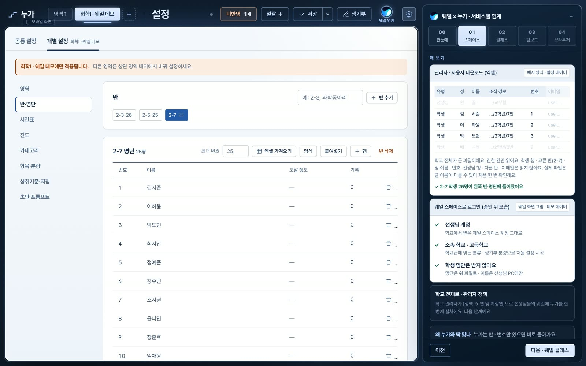
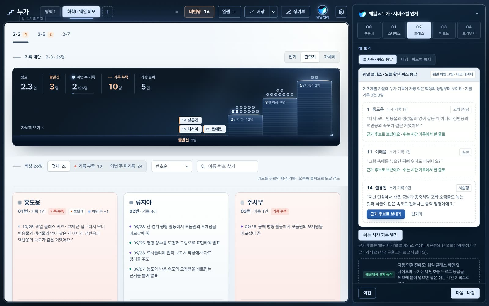
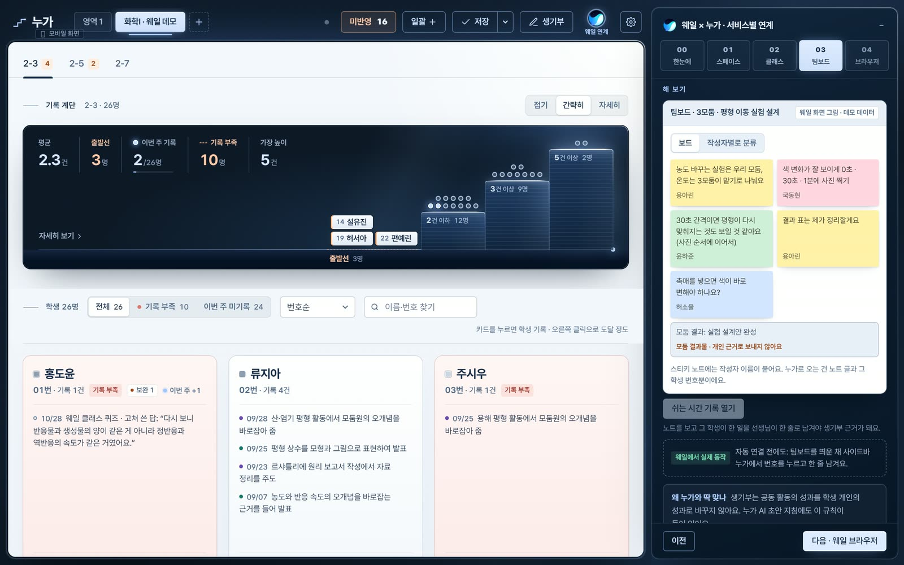
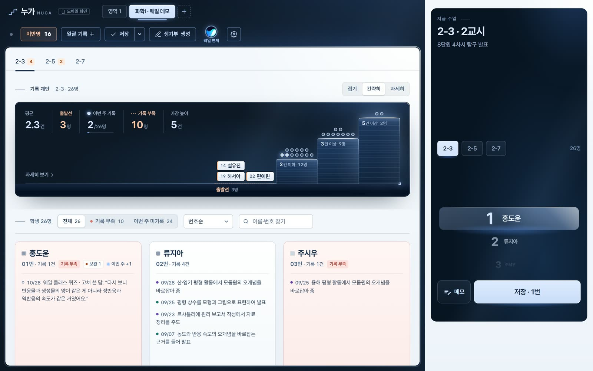

오래된 기억
화학 수업에 성실히 참여하고 탐구 활동에서 우수한 역량을 보이며, 모둠원과 협력하는 태도가 돋보임.
같은 학생. 다른 문장.
화학 수업에 성실히 참여하고 탐구 활동에서 우수한 역량을 보이며, 모둠원과 협력하는 태도가 돋보임.
중화 적정의 오차를 눈금 읽기와 종말점 판단으로 구분하고, 오차를 줄일 재실험 방법을 제안함.
4/2 · 실험·발표 · 5번 학생
합성 예시 · 최종 작성은 교사
학생부를 넘어, 오늘의 성장으로
현재를 보고
다음을 제안하고
변화를 기록하다
누가가 잇는 기록의 흐름
놓친 발언은 자동 추천
실측 성능이 아닌 설계 목표 · AI 추천 후 교사가 확인
기록 방법 1 · 수동 기록
실제 앱 화면 · 합성 데모 데이터
기록 방법 2 · 자동 기록
녹음은 기본 꺼짐 · 학교 승인·안내·동의 후 사용 · 합성 데모 데이터
웨일 연계 · 서비스별로




실제 동작: 웨일 사이드바·듀얼탭(웨일 5.39) · 지금 가능: 웨일 스페이스 명단 파일 가져오기(예시 양식 기준) · 연계 예시(승인·협의 전): 웨일 스페이스 로그인, 클래스 응답·팀보드 노트 받기, 성적 노트로 쪽지 보내기 · 합성 데모 데이터
개인정보 보호 설계 원칙
자주 묻는 질문
최종 작성은 교사. AI는 발언 추천·정리를 돕습니다.
오늘의 관찰이 다음 피드백의 근거가 됩니다.
기본 OFF. 학교 승인·안내·동의 후 시작합니다.
이름 분리·음성 삭제·암호화를 원칙으로 설계합니다.
기록은 학생의 다음 시도를 돕는 피드백이 됩니다.
학교별 도입 환경과 운영 기준을 검토할 계획입니다.
모든 학생이 기록되는 교실
이 브라우저에서 앱을 처음 열면 나오는 ‘데모로 둘러보기’로 합성 데이터의 모든 흐름을 볼 수 있습니다.Windows 설치 파일 · 개인정보 처리방침
교사가 기록하고, 학생이 성장합니다.누가